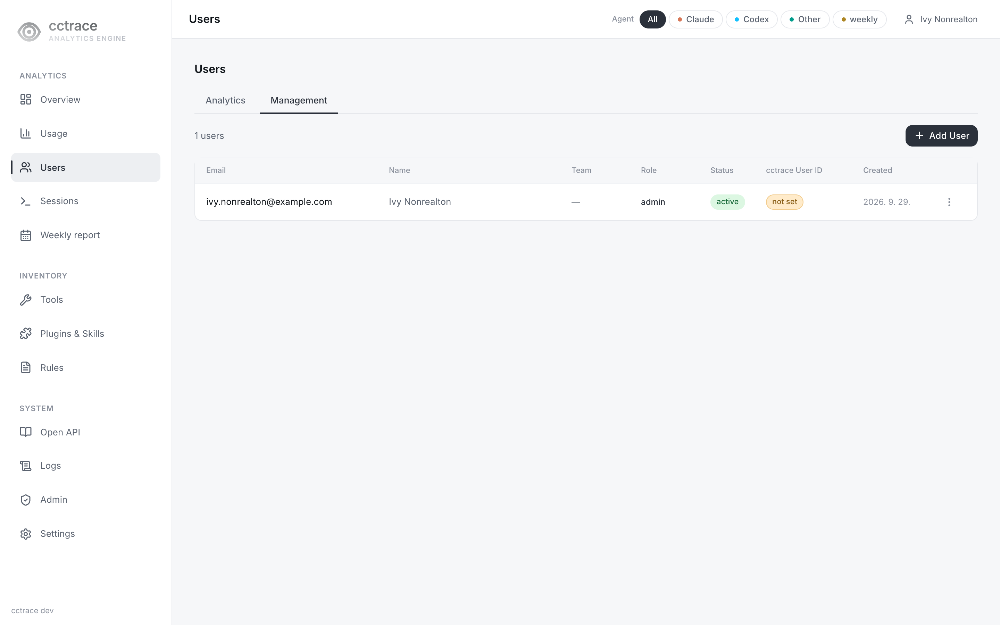
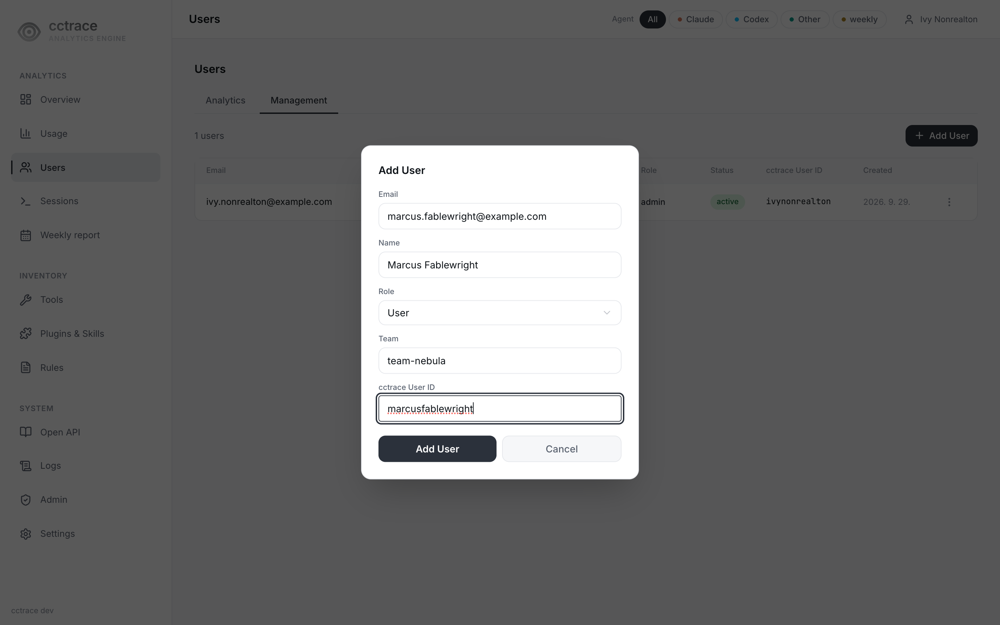
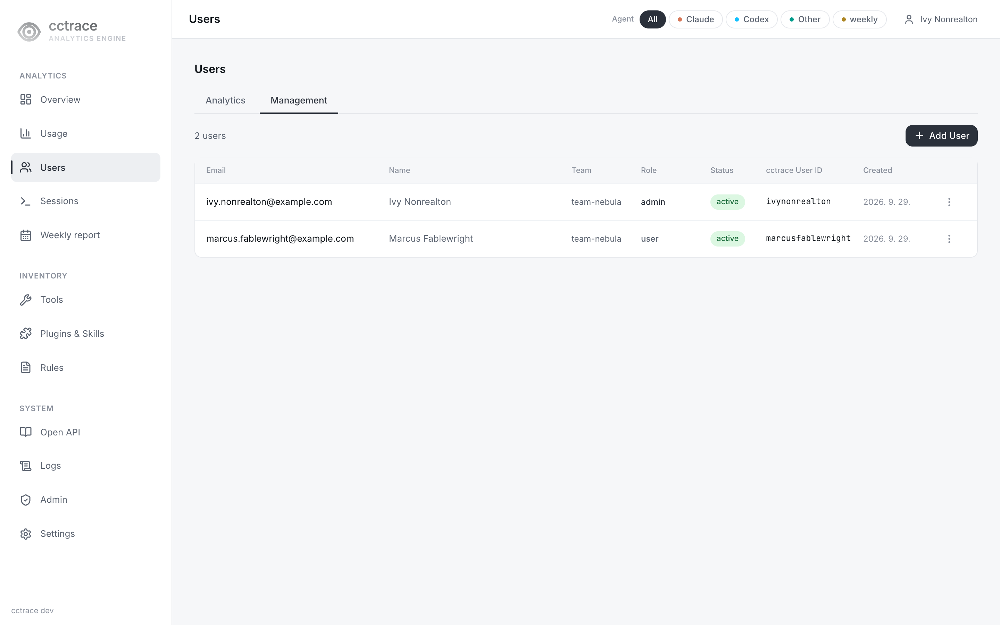
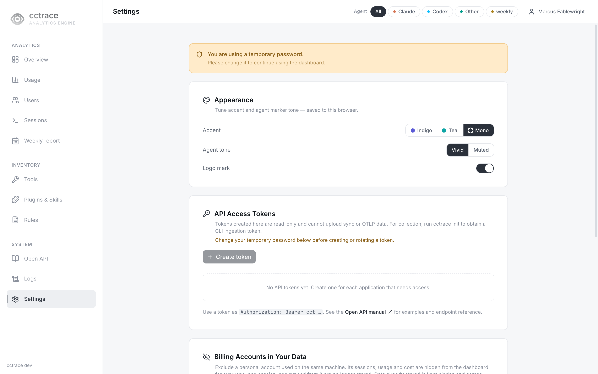
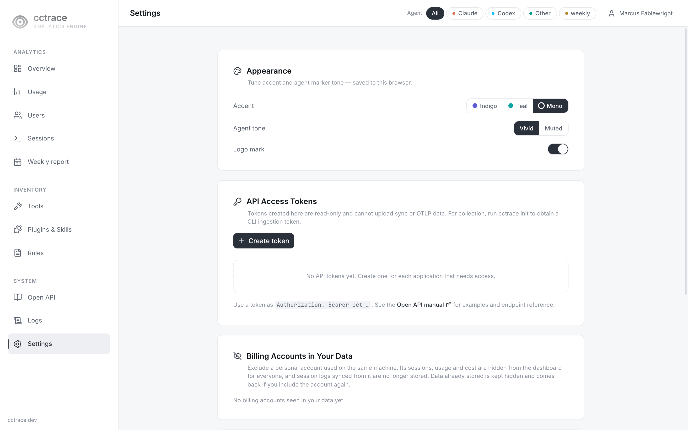
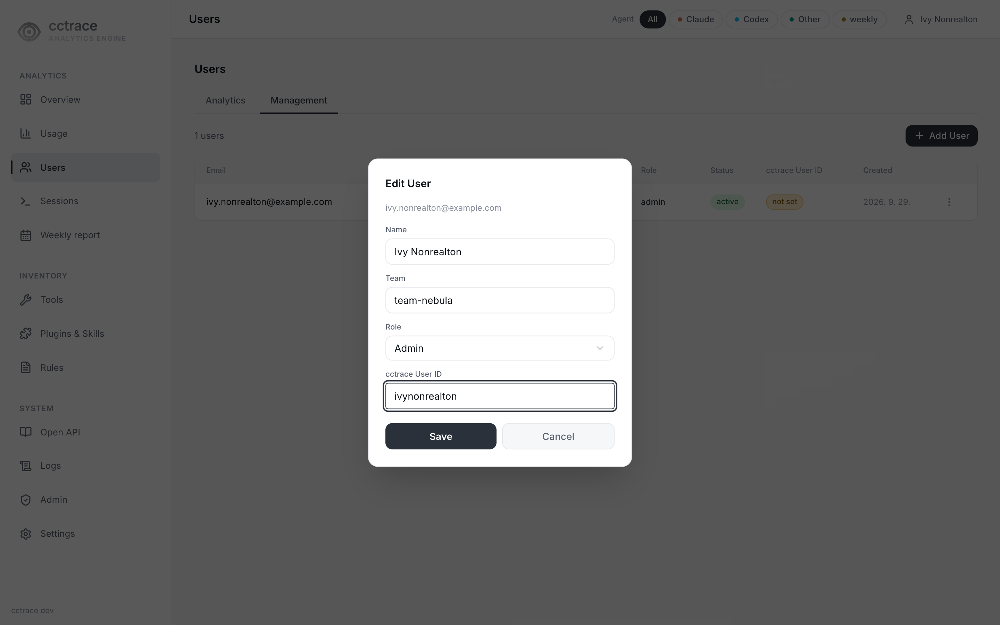

사용자¶
관리자는 사람마다 대시보드 계정을 하나씩 만든다. 클라이언트가 보낸 데이터는 계정의 cctrace 사용자 ID로 그 사람에게 묶인다.
역할¶
| 역할 | 보고 할 수 있는 것 |
|---|---|
admin |
모든 사용자의 세션, /users의 Management 탭, /admin 페이지, 프로젝트 삭제 |
user |
본인 세션, 로그인한 모든 사용자가 공유하는 집계 |
역할별 조회 범위는 개인정보 참고.
사용자 추가¶
-
Users(
/users)를 열고 Management 탭 선택. 관리자에게만 보임
-
Add User를 누르고 모든 필드 입력. 하나라도 비면 서버가 거부
필드 값 Email 로그인 주소. 예: alice@example.comName 표시 이름 Role User또는AdminTeam 팀 이름. 팀이 없는 계정은 cctrace init실패./setup으로 만든 관리자는 Edit으로 팀을 넣기 전까지 팀이 없음cctrace User ID 짧은 식별자. 예: alice.cctrace init에서 입력하는 값. 이미 수신된 텔레메트리의 사용자 ID를 후보로 제시
-
대화상자에 Temporary Password가 한 번만 표시됨. cctrace 사용자 ID와 함께 당사자에게 전달

| 오류 | 원인 |
|---|---|
email already exists |
같은 이메일의 계정이 있음 |
cctrace_user_id already assigned to another user |
같은 사용자 ID의 계정이 있음 |
새 사용자의 첫 로그인¶
- 당사자가
/login에서 이메일과 임시 비밀번호로 로그인 -
비밀번호를 바꾸기 전까지 대시보드는 모든 페이지를
/settings로 보내고 다른 메뉴는 비활성
-
Change Password에서 새 비밀번호(8자 이상) 설정

임시 비밀번호가 남아 있는 동안 서버는 cctrace init 인증을 거부한다. init은 please change your password on the dashboard before authenticating으로 멈춘다. 변경 후 연결로 진행.
데이터가 계정에 귀속되는 방식¶
cctrace init: cctrace 사용자 ID와 비밀번호로 인증. 서버가 계정의 이름, 이메일, 팀과 업로드 토큰을 돌려주고 클라이언트가 프로필에 저장- 세션 업로드: 매번 프로필의 사용자 ID와 이메일 동봉
- OTEL 텔레메트리:
init이 쓰는OTEL_RESOURCE_ATTRIBUTES가 사용자 ID, 이름, 이메일, 팀 부착(user.id=<id>,user.name=<name>,user.profile.email=<email>,user.team=<team>). 사용자의 업로드 토큰으로 들어온 텔레메트리는 그 토큰의 소유 계정에 귀속 - 대시보드 조회:
user계정에는 그 cctrace 사용자 ID로 저장된 데이터만 표시. 사용자 ID가 없는 계정(목록의 not set 표시)은 세션 데이터 조회 불가(CCTRACE_USERID_ACCESS_CONTROL기본값일 때) - 사용자 ID 변경: 이전 ID로 저장된 데이터는 이동하지 않음
계정 관리¶
Management 탭에서 행 메뉴를 연다.
| 작업 | 결과 |
|---|---|
| Edit | 이름, 팀, 역할, cctrace 사용자 ID 변경. 이미 있는 팀은 비울 수 없음: 비우면 Team is required. 표시와 함께 Save 비활성화 |
| Deactivate / Activate | 비활성 계정은 로그인 불가(account is disabled), cctrace init 인증 불가, 업로드 토큰도 거부되어 클라이언트 전송 중단. 저장된 데이터는 유지 |
| Reset Password | 새 임시 비밀번호 발급, 한 번만 표시. 다음 로그인 때 다시 변경해야 하고 그 전까지 cctrace init 거부. 기존 업로드 토큰의 수집은 계속됨 |
| Revoke API Token | 계정에 토큰이 있을 때 표시. 업로드 토큰을 포함한 계정의 모든 토큰 삭제. cctrace init을 다시 실행할 때까지 클라이언트 전송 중단 |
| Clear Collected Data | 계정 이메일로 저장된 텔레메트리와 세션 레코드 삭제. 되돌릴 수 없음 |

계정을 삭제하는 작업은 없다. 대신 비활성화한다.
역할 변경과 비활성화는 열려 있는 브라우저 세션에 15분 안에 반영된다. 대시보드 액세스 쿠키의 수명이 15분이고 갱신할 때 계정을 다시 읽기 때문이다.
Analytics 탭¶
/users의 Analytics 탭은 로그인한 모든 사용자에게 보이며 사용자를 비용 순으로 나열한다. 비용 수치는 변경이 진행 중이라 이 문서에서 다루지 않는다.